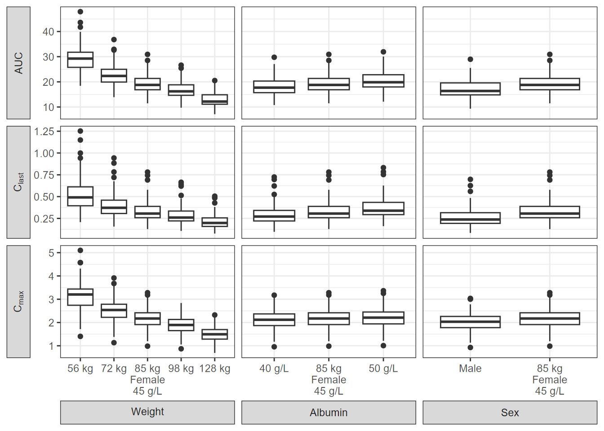
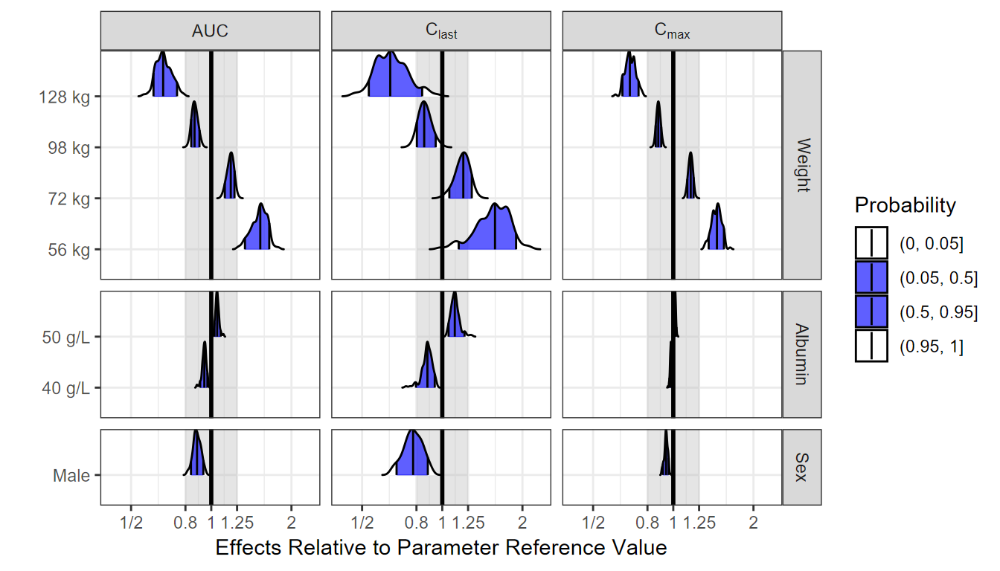

PK Model: Assessing the Marginal Impact of Covariates on Drug Exposure
Source:vignettes/PK_Example.Rmd
PK_Example.RmdHere we illustrate the varying one covariate at a time approach, keeping all the others at the reference value or category. A two-compartment pharmacokinetic (PK) model defined with ordinary differential equations (ODEs) is used. Covariates Weight, Albumin and Sex had effects on the Clearance (CL) model parameter while Weight and Sex had effects on the Volume of distribution (V) model parameter. For simplicity, there were no included covariates effects on other PK parameters such as peripheral clearance or volume. The approach is general and can be easily extended to any other ODEs model with multiple covariate effects on multiple model parameters.
Specifying a PK Model using mrgsolve
codepkmodelcov <- [1116 chars quoted with ''']
modcovsim <- mcode("codepkmodelcov", codepkmodelcov)
partab <- setDT(modcovsim@annot$data)[block=="PARAM", .(name, descr, unit)]
partab <- merge(partab, melt(setDT(modcovsim@param@data), meas=patterns("*"), var="name"))
knitr::kable(partab)| name | descr | unit | value |
|---|---|---|---|
| ALB | Albumin | g/L | 45.00 |
| CL | Clearance CL | L/h | 4.00 |
| CLALB | Ablumin on CL | ref. 45 g/L | -0.80 |
| CLSEX | Sex on CL | ref. Female | 0.20 |
| CLWT | Weight on CL | ref. 85 kg | 1.00 |
| KA | Absorption rate constant Ka | 1/h | 0.50 |
| Qp | Intercompartmental clearance Q | L/h | 10.00 |
| SEX | Sex | 0=Female, 1=Male | 0.00 |
| V | Central volume Vc | L | 10.00 |
| VSEX | Sex on Vc | ref. Female | 0.07 |
| VWT | Weight on Vc | ref. 85 kg | 1.00 |
| Vp | Peripheral volume Vp | L | 50.00 |
| WT | Weight | kg | 85.00 |
Simulate a Reference Subjects with BSV
We simulate the reference subject having the reference covariate values defined in the model which are:
Weight = 85 kg, Sex = Female and Albumin = 45 g/L. We also keep the between subject variability (BSV) to illustrate its effects on the concentration-time profiles on linear and log linear scales.
idata <- data.table(ID=1:nbsvsubjects, WT=85, SEX=0, ALB=45)
ev1 <- ev(time = 0, amt = 100, cmt = 1)
data.dose <- ev(ev1)
data.dose <- setDT(as.data.frame(data.dose))
data.all <- data.table(idata, data.dose)
outputsim <- modcovsim %>%
data_set(data.all) %>%
mrgsim(end = 24, delta = 0.25) %>%
as.data.frame %>%
as.data.table
outputsim$SEX <- factor(outputsim$SEX, labels="Female")
# Only plot a random sample of N=500
set.seed(678549)
plotdata <- outputsim[ID %in% sample(unique(ID), 500)]
p1 <- ggplot(plotdata, aes(time, CP, group = ID)) +
geom_line(alpha = 0.2, size = 0.1) +
facet_grid(~ WT + SEX + ALB, labeller = label_both) +
labs(y = "Plasma Concentrations", x = "Time (h)")
p2 <- ggplot(plotdata, aes(time, CP, group = ID)) +
geom_line(alpha = 0.2, size = 0.1) +
facet_grid(~ WT + SEX + ALB, labeller = label_both) +
scale_y_log10() +
labs(y = expression(Log[10]~Plasma~Concentrations), x = "Time (h)")
egg::ggarrange(p1, p2, ncol = 2)Compute PK Parameters, Plot and Summarize BSV
In this section we compute the PK parameters of interest, provide a plot of the parameters as well as of the standardized ones. We also summarize and report the BSV as ranges of 50 and 90% of patients for each PK parameter. Later on we might choose to include these ranges in the coveffectsplot or not.
derive.exposure <- function(time, CP) {
n <- length(time)
x <- c(
Cmax = max(CP),
Clast = CP[n],
AUC = sum(diff(time) * (CP[-1] + CP[-n])) / 2
)
data.table(paramname=names(x), paramvalue=x)
}
refbsv <- outputsim[, derive.exposure(time, CP), by=.(ID, WT, SEX, ALB)]
p3 <- ggplot(refbsv, aes(
x = paramvalue,
y = paramname,
fill = factor(..quantile..),
height = ..ndensity..)) +
facet_wrap(~ paramname, scales="free", ncol=1) +
stat_density_ridges(
geom="density_ridges_gradient", calc_ecdf=TRUE,
quantile_lines=TRUE, rel_min_height=0.001, scale=0.9,
quantiles=c(0.05, 0.25, 0.5, 0.75, 0.95)) +
scale_fill_manual(
name = "Probability",
values = c("white", "#FF000050", "#FF0000A0", "#FF0000A0", "#FF000050", "white"),
labels = c("(0, 0.05]", "(0.05, 0.25]",
"(0.25, 0.5]", "(0.5, 0.75]",
"(0.75, 0.95]", "(0.95, 1]")) +
theme_bw() +
theme(
legend.position = "none",
axis.text.y = element_blank(),
axis.ticks.y = element_blank(),
axis.title.y = element_blank()) +
labs(x="PK Parameters", y="") +
scale_x_log10() +
coord_cartesian(expand=FALSE)
# Obtain the standardized parameter value by dividing by the median.
refbsv[, stdparamvalue := paramvalue/median(paramvalue), by=paramname]
p4 <- ggplot(refbsv, aes(
x = stdparamvalue,
y = paramname,
fill = factor(..quantile..),
height = ..ndensity..)) +
facet_wrap(~ paramname, scales="free", ncol=1) +
stat_density_ridges(
geom="density_ridges_gradient", calc_ecdf=TRUE,
quantile_lines=TRUE, rel_min_height=0.001, scale=0.9,
quantiles=c(0.05, 0.25, 0.5, 0.75, 0.95)) +
scale_fill_manual(
name="Probability",
values=c("white", "#FF000050", "#FF0000A0", "#FF0000A0", "#FF000050", "white"),
labels = c("(0, 0.05]", "(0.05, 0.25]",
"(0.25, 0.5]", "(0.5, 0.75]",
"(0.75, 0.95]", "(0.95, 1]")) +
theme_bw() +
theme(
legend.position = "none",
axis.text.y = element_blank(),
axis.ticks.y = element_blank(),
axis.title.y = element_blank()) +
labs(x="Standardized PK Parameters", y="") +
scale_x_log10() +
coord_cartesian(expand=FALSE, xlim = c(0.3,3))
p3+p4
Ranges of BSV for each PK Parameter:
bsvranges <- refbsv[,list(
P05 = quantile(stdparamvalue, 0.05),
P25 = quantile(stdparamvalue, 0.25),
P50 = quantile(stdparamvalue, 0.5),
P75 = quantile(stdparamvalue, 0.75),
P95 = quantile(stdparamvalue, 0.95)), by = paramname]
bsvranges
#> paramname P05 P25 P50 P75 P95
#> 1: Cmax 0.8059274 0.9206221 1 1.089887 1.216206
#> 2: Clast 0.4949969 0.7539645 1 1.311249 1.737468
#> 3: AUC 0.7223480 0.8790115 1 1.150789 1.324353Generate and Simulate at Combinations of Covariate of Interest
Based on our observed covariate data, we compute percentiles of interest that we will use to simulate data at. Common practice is to compute the 5,25,75,95 percentiles (the median being the reference). In some cases, we might want to explore the min, max or other extreme case scenarios. Care should be taken as this approach might generate unrealistic combination of covariates that can never appear in a real patient. The utility function expand.modelframe (written by Benjamin Rich) is defined in the setup section of the vignette and can be found in the source code. It facilitates the creation of a set of covariate values varying one at a time.
Generate a Dataset Holding Combinations of Covariates:
reference.values <- data.frame(WT = 85, ALB = 45, SEX = 0)
covcomb <- expand.modelframe(
WT = c(56, 72, 98, 128), # P05, P25, P50, P75, P95
ALB = c(40, 50), # P05, P50, P95
SEX = c(1), # Reference is for SEX=0 (female)
rv = reference.values)
# Add the reference
covcomb <- rbind(covcomb, data.table(reference.values, covname="REF"))
covcomb$ID <- 1:nrow(covcomb)
covcomb
#> WT ALB SEX covname ID
#> 1 56 45 0 WT 1
#> 2 72 45 0 WT 2
#> 3 98 45 0 WT 3
#> 4 128 45 0 WT 4
#> 5 85 40 0 ALB 5
#> 6 85 50 0 ALB 6
#> 7 85 45 1 SEX 7
#> 8 85 45 0 REF 8Simulation at Unique Combinations of Covariates
As a first step, we simulate without uncertainty and without BSV using zero_re() at unique combination of covariates and provide a plot to visualize the effects.
idata <- data.table::copy(covcomb)
idata$covname <- NULL
ev1 <- ev(time=0, amt=100, cmt=1)
data.dose <- as.data.frame(ev1)
data.all <- data.table(idata, data.dose)
outcovcomb<- modcovsim %>%
data_set(data.all) %>%
zero_re() %>%
mrgsim(end=24, delta=0.25) %>%
as.data.frame %>%
as.data.table
outcovcomb$SEX <- factor(outcovcomb$SEX, labels=c("Female", "Male"))
pkprofiletypical <- ggplot(outcovcomb, aes(x=time, y=CP, col=factor(WT), linetype=SEX)) +
geom_line(aes(group=ID), alpha=1, size=1.5) +
facet_grid(ALB +SEX ~ WT, labeller= labeller(ALB = label_both, SEX = label_value, WT = label_both),
switch = "y") +
labs(
x = "Time (h)",
y = "Plasma Concentrations",
linetype = "Sex",
colour = "Weight",
caption = "Simulation without Uncertainty and without BSV") +
coord_cartesian(ylim=c(0,4))
pkprofiletypical <- pkprofiletypical +theme_bw(base_size = 13)+
theme(axis.title.y = element_text(size=15))+
guides(colour=guide_legend(override.aes = list(alpha=1,size=0.5)),
linetype=guide_legend(override.aes = list(size=0.5)))+
coord_cartesian(ylim=c(0,4))
pkprofiletypicalAdding Uncertainty from a Varcov Matrix
First, we will invent a varcov matrix by assuming 15% relative standard errors and correlations of 0.2 across the board. We then simulate a 100 set of parameters using a multivariate normal (kept at 100 for the vignette, use more replicates for a real project). Also, unless the model was written in a way to allow unconstrained parameter values, care should be taken to make sure the simulated parameters are valid and make sense. When available, use the set of parameters from bootstrap replicates.
Variance Covariance Matrix of fixed effects:
theta <- unclass(as.list(param(modcovsim)))
theta[c("WT", "SEX", "ALB")] <- NULL
theta <- unlist(theta)
as.data.frame(t(theta))
#> KA CL V Vp Qp CLALB CLSEX CLWT VSEX VWT
#> 1 0.5 4 10 50 10 -0.8 0.2 1 0.07 1
varcov <- cor2cov(
matrix(0.2, nrow=length(theta), ncol=length(theta)),
sd=theta*0.15)
rownames(varcov) <- colnames(varcov) <- names(theta)
as.data.frame(varcov)
#> KA CL V Vp Qp CLALB CLSEX
#> KA 0.0056250 0.00900 0.02250 0.11250 0.02250 -0.001800 4.5e-04
#> CL 0.0090000 0.36000 0.18000 0.90000 0.18000 -0.014400 3.6e-03
#> V 0.0225000 0.18000 2.25000 2.25000 0.45000 -0.036000 9.0e-03
#> Vp 0.1125000 0.90000 2.25000 56.25000 2.25000 -0.180000 4.5e-02
#> Qp 0.0225000 0.18000 0.45000 2.25000 2.25000 -0.036000 9.0e-03
#> CLALB -0.0018000 -0.01440 -0.03600 -0.18000 -0.03600 0.014400 -7.2e-04
#> CLSEX 0.0004500 0.00360 0.00900 0.04500 0.00900 -0.000720 9.0e-04
#> CLWT 0.0022500 0.01800 0.04500 0.22500 0.04500 -0.003600 9.0e-04
#> VSEX 0.0001575 0.00126 0.00315 0.01575 0.00315 -0.000252 6.3e-05
#> VWT 0.0022500 0.01800 0.04500 0.22500 0.04500 -0.003600 9.0e-04
#> CLWT VSEX VWT
#> KA 0.002250 0.00015750 0.002250
#> CL 0.018000 0.00126000 0.018000
#> V 0.045000 0.00315000 0.045000
#> Vp 0.225000 0.01575000 0.225000
#> Qp 0.045000 0.00315000 0.045000
#> CLALB -0.003600 -0.00025200 -0.003600
#> CLSEX 0.000900 0.00006300 0.000900
#> CLWT 0.022500 0.00031500 0.004500
#> VSEX 0.000315 0.00011025 0.000315
#> VWT 0.004500 0.00031500 0.022500Generating Sets of Parameters with Uncertainty
Second, we generate the sim_parameters dataset using mvrnorm and then incorporate the uncertainty by simulating using a different set of parameters (row) for each replicate.
First Few Rows of a Dataset Containing Simulated Fixed Effects with Uncertainty:
set.seed(678549)
# mvtnorm::rmvnorm is another option that can be explored
sim_parameters <- MASS::mvrnorm(nsim, theta, varcov, empirical=T) %>% as.data.table
head(sim_parameters)
#> KA CL V Vp Qp CLALB CLSEX
#> 1: 0.4187256 4.069118 8.715379 41.47428 9.455858 -0.8111728 0.2039540
#> 2: 0.5098085 3.696576 8.154115 47.22794 8.277912 -0.5331659 0.2231979
#> 3: 0.4855154 3.817648 9.517021 51.13969 9.383604 -0.9545653 0.2154531
#> 4: 0.5375723 4.442963 7.523613 46.54212 8.688217 -0.7444601 0.2021112
#> 5: 0.4850993 3.831527 10.378489 42.97885 9.669362 -0.5975439 0.1165704
#> 6: 0.6586171 3.629422 11.982402 46.40886 10.628495 -0.7070900 0.2536121
#> CLWT VSEX VWT
#> 1: 1.0617178 0.06304572 0.7045462
#> 2: 0.5778815 0.06067099 0.9258639
#> 3: 1.0727876 0.07521197 1.0813032
#> 4: 0.9116141 0.07267973 0.8183653
#> 5: 0.9228739 0.06703907 0.8989825
#> 6: 1.0691522 0.08488102 0.9973610Iterative Simulations to Apply the Uncertainty
Third, we illustrate how you can iterate over a set of parameters value using a for loop. We then overlay the previous simulation results without uncertainty on the one with uncertainty to visualize the effect of adding it.
idata <- data.table::copy(covcomb)
idata$covname <- NULL
ev1 <- ev(time=0, amt=100, cmt=1)
data.dose <- as.data.frame(ev1)
iter_sims <- NULL
for(i in 1:nsim) {
data.all <- data.table(idata, data.dose, sim_parameters[i])
out <- modcovsim %>%
data_set(data.all) %>%
zero_re() %>%
mrgsim(start=0, end=24, delta=0.25) %>%
as.data.frame %>%
as.data.table
out[, rep := i]
iter_sims <- rbind(iter_sims, out)
}
iter_sims$SEX <- factor(iter_sims$SEX, labels = c("Female", "Male"))
summary_conc <- function(CP) {
x <- c(
Cmed = median(CP),
Clow = quantile(CP, probs = 0.05),
Cup = quantile(CP, probs = 0.95)
)
data.table(paramname=names(x), paramvalue=x)
}
# pkprofileuncertainty <- ggplot(iter_sims, aes(x=time, y=CP, col=factor(WT), linetype=SEX)) +
# geom_line(aes(group=interaction(ID, rep)), alpha=0.1, size=0.1) +
# geom_line(data = outcovcomb, aes(group=interaction(ID)),
# alpha= 1, size=0.7, colour = "black") +
# facet_grid(ALB +SEX ~ WT, labeller= labeller(ALB = label_both, SEX = label_value, WT = label_both),
# switch = "y") +
# labs(
# x = "Time (h)",
# y = "Plasma Concentrations",
# linetype = "Sex",
# colour = "Uncertainty\nReplicates\nWeight",
# caption = "Simulation with Uncertainty, without BSV") +
# coord_cartesian(ylim=c(0,3.5))+
# guides(colour = guide_legend(override.aes = list(alpha = 1)))+
# theme_bw(base_size = 13)+
# theme(axis.title.y = element_text(size=15))+
# guides(colour=guide_legend(override.aes = list(alpha=1,size=0.5)),
# linetype=guide_legend(override.aes = list(size=0.5)))+
# coord_cartesian(ylim=c(0,4))
iter_sims_sum <- iter_sims[, summary_conc(CP), by=.( time, WT, SEX, ALB)]
iter_sims_sum <- spread(iter_sims_sum,paramname,paramvalue)
iter_sims_sum <- as.data.frame(iter_sims_sum)
pkprofileuncertainty_sum <- ggplot(iter_sims_sum, aes(x=time, col=factor(WT),
fill=factor(WT),
linetype=SEX)) +
geom_ribbon((aes(ymin= `Clow.5%` ,ymax=`Cup.95%`)), alpha=0.4,linetype=0)+
geom_line(aes(y=Cmed),alpha=1 , color ="black")+
facet_grid(ALB +SEX ~ WT, labeller= labeller(ALB = label_both, SEX = label_value,
WT = label_both),switch = "y") +
labs(
x = "Time (h)",
y = "Plasma Concentrations",
linetype = "Sex",
colour = "Uncertainty\n5-95%\nWeight",
fill = "Uncertainty\n5-95%\nWeight",
caption = "Simulation with Uncertainty, without BSV") +
theme_bw(base_size = 13)+
theme(axis.title.y = element_text(size=15))+
guides(colour=guide_legend(override.aes = list(alpha=0.4,size=0.4)),
fill=guide_legend(override.aes = list(alpha=0.4,size=0.4)),
linetype=guide_legend(override.aes = list(size=0.5)))+
coord_cartesian(ylim=c(0,4))
pkprofileuncertainty_sumCompute PK Parameters and Boxplots
Similar to an earlier section, we compute the PK parameters by patient and by replicate standardize by the computed median for reference subject and provide a plot. We add some data manipulation to construct more informative labels that will help in the plotting.
out.df.univariatecov.nca <- iter_sims[, derive.exposure(time, CP), by=.(rep, ID, WT, SEX, ALB)]
refvalues <- out.df.univariatecov.nca[
ALB==45 & WT==85 & SEX=="Female",
.(medparam = median(paramvalue)), by= .(rep,paramname) ]
head(data.frame(refvalues))
#> rep paramname medparam
#> 1 1 Cmax 2.0324695
#> 2 1 Clast 0.3052614
#> 3 1 AUC 19.6251043
#> 4 2 Cmax 2.5326368
#> 5 2 Clast 0.3337737
#> 6 2 AUC 20.3244238Median Parameter Values for the Reference:
covcomb$covvalue[covcomb$covname=="WT"] <- paste(covcomb$WT[covcomb$covname=="WT"],"kg")
covcomb$covvalue[covcomb$covname=="ALB"] <- paste(covcomb$ALB[covcomb$covname=="ALB"],"g/L")
covcomb$covvalue[covcomb$covname=="SEX"] <- "Male"
covcomb$covvalue[covcomb$covname=="REF"] <- "85 kg\nFemale\n45 g/L"
#covcomb[covname=="REF", covvalue := "85 kg Female 45 g/L"]
covcomb <- as.data.table(covcomb)
out.df.univariatecov.nca <- merge(
out.df.univariatecov.nca,
covcomb[, list(ID, covname, covvalue)]
)
setkey(out.df.univariatecov.nca, paramname,rep)
out.df.univariatecov.nca <- merge(
out.df.univariatecov.nca,
refvalues)
out.df.univariatecov.nca[, paramvaluestd := paramvalue/medparam]
boxplotdat <- out.df.univariatecov.nca[covname!="REF"]
boxplotdat[covname=="WT", covname2 := "Weight"]
boxplotdat[covname=="ALB", covname2 := "Albumin"]
boxplotdat[covname=="SEX", covname2 := "Sex"]
boxplotdatREFWT <- out.df.univariatecov.nca[covname=="REF"]
boxplotdatREFWT[, covname2 := "Weight"]
boxplotdatREFWT[, covvalue := covcomb[covname=="REF", covvalue]]
boxplotdatREFSEX <- out.df.univariatecov.nca[covname=="REF"]
boxplotdatREFSEX[, covname2 := "Sex"]
boxplotdatREFSEX[, covvalue := covcomb[covname=="REF", covvalue]]
boxplotdatREFALB <- out.df.univariatecov.nca[covname=="REF"]
boxplotdatREFALB[, covname2 := "Albumin"]
boxplotdatREFALB[, covvalue := covcomb[covname=="REF", covvalue]]
boxplotdat <- rbind(
boxplotdat,
boxplotdatREFWT,
boxplotdatREFSEX,
boxplotdatREFALB)
boxplotdat[paramname=="AUC", paramname2 := "AUC"]
boxplotdat[paramname=="Clast", paramname2 := "C[last]"]
boxplotdat[paramname=="Cmax", paramname2 := "C[max]"]
boxplotdat[, covname2 := factor(covname2, levels=unique(covname2))]
#boxplotdat[, covvalue := factor(covvalue, levels=unique(covvalue))]
boxplotdat[, covvalue := factor(covvalue,
levels=c("56 kg", "72 kg", "40 g/L", "Male", "85 kg\nFemale\n45 g/L", "98 kg", "128 kg", "50 g/L"))]
pkparametersboxplot<- ggplot(boxplotdat, aes(x=covvalue, y=paramvalue))+
facet_grid(paramname2 ~ covname2, scales="free", labeller=label_parsed,
switch="both") +
geom_boxplot() +
labs(y="Parameter Values") +
theme(axis.title=element_blank(),
strip.placement = "outside")
pkparametersboxplot
Alternative View of the Data: Distributions and Intervals
Here we provide an alternative visual summary of the standardized PK parameters. It shows the distribution, quantiles of interest. It isolates each covariate effects in one panel keeping the reference on its own. It is exactly the same data as the boxplots. Which visual presentation do you prefer? Which one enables you to clearly see and compare the covariate effects?
out.df.univariatecov.nca[covname=="WT", covname2 := "Weight"]
out.df.univariatecov.nca[covname=="ALB", covname2 := "Albumin"]
out.df.univariatecov.nca[covname=="SEX", covname2 := "Sex"]
out.df.univariatecov.nca[covname=="REF", covname2 := "Reference"]
out.df.univariatecov.nca[paramname=="AUC", paramname2 := "AUC"]
out.df.univariatecov.nca[paramname=="Clast", paramname2 := "C[last]"]
out.df.univariatecov.nca[paramname=="Cmax", paramname2 := "C[max]"]
out.df.univariatecov.nca[, covvalue := factor(covvalue, levels=unique(covvalue))]
out.df.univariatecov.nca[, covname2 := factor(covname2, levels=unique(covname2))]
out.df.univariatecov.nca[, paramname2 := factor(paramname2, levels=unique(paramname2))]
ggplot(out.df.univariatecov.nca[out.df.univariatecov.nca$covname!="REF",], aes(
x = paramvaluestd,
y = covvalue,
fill = factor(..quantile..),
height = ..ndensity..)) +
facet_grid(covname2 ~ paramname2,
scales = "free_y",
space = "free",
labeller = label_parsed)+
annotate("rect",
xmin = 0.8,
xmax = 1.25,
ymin = -Inf,
ymax = Inf,
fill = "gray",
alpha = 0.4) +
stat_density_ridges(
geom = "density_ridges_gradient",
calc_ecdf = TRUE,
quantile_lines = TRUE,
rel_min_height = 0.001,
scale = 0.9,
quantiles = c(0.05,0.5, 0.95)) +
scale_x_continuous(
breaks = c(0.25, 0.5, 0.8, 1/0.8, 1/0.5, 1/0.25),
tran = "log") +
scale_fill_manual(
name = "Probability",
values = c("white", "#0000FFA0", "#0000FFA0", "white"),
labels = c("(0, 0.05]", "(0.05, 0.5]","(0.5, 0.95]", "(0.95, 1]")) +
geom_vline(aes(xintercept=1), size=1) +
theme_bw() +
labs(x="Effects Relative to Parameter Reference Value", y="")+
scale_x_continuous(breaks=c(0.25,0.5,0.8,1/0.8,1/0.5,1/0.25),trans ="log" )
Adding the BSV Ranges and Putting it all Together Using forest_plot
To contrast the covariate effects with random unexplained variability we add to the data the BSV intervals computed in an earlier section. We then do some data manipulation and formatting to produce a plot from the package function forest_plot. To simplify we will only keep AUC before revisiting more than one parameter plots at the end. The user can also compute an show the BSV for all presented effects not just for the reference. Refer to the approach that incorporate BSV and full covariate distributions presented in another vignette.
fpdata <- out.df.univariatecov.nca[,
setNames(as.list(quantile(paramvaluestd, probs=c(0.5, 0.05, 0.95))), c("mid", "lower", "upper")),
by=.(paramname2, covname2, covvalue)]
bsvranges[paramname=="AUC", paramname2 := "AUC"]
bsvranges[paramname=="Clast", paramname2 := "C[last]"]
bsvranges[paramname=="Cmax", paramname2 := "C[max]"]
setkey(bsvranges, paramname2)
fpdataBSV50 <- fpdata[covname2 == "Reference"]
fpdataBSV50$covname2 <- "BSV"
fpdataBSV50$covvalue <- "50% of patients"
setkey(fpdataBSV50, paramname2)
fpdataBSV50$lower <- bsvranges[,"P25"]
fpdataBSV50$upper <- bsvranges[,"P75"]
fpdataBSV90 <- fpdata[covname2 == "Reference"]
fpdataBSV90$covname2 <- "BSV"
fpdataBSV90$covvalue <- "90% of patients"
setkey(fpdataBSV90, paramname2)
fpdataBSV90$lower <- bsvranges[,"P05"]
fpdataBSV90$upper <- bsvranges[,"P95"]
fpdata <- rbind(fpdata, fpdataBSV90, fpdataBSV50)
fpdata[, LABEL := sprintf("%s [%s, %s]",
round_pad(mid, 2),
round_pad(lower, 2),
round_pad(upper, 2)) ]
setnames(fpdata, "paramname2", "paramname")
setnames(fpdata, "covname2", "covname")
setnames(fpdata, "covvalue", "label")
fpdata[, label := factor(label, levels=unique(label))]
interval_legend_text <- "Median (points)\n90% CI (horizontal lines)"
interval_bsv_text <- "BSV (points)\nPrediction Intervals (horizontal lines)"
ref_legend_text <- "Reference (vertical line)\nClinically relevant limits\n(gray area)"
area_legend_text <- "Reference (vertical line)\nClinically relevant limits\n(gray area)"
png("./Figure4_6.png",width =9 ,height = 6,units = "in",res=72)
coveffectsplot::forest_plot(fpdata[paramname=="AUC" &
covname!="Reference" &
covname!="BSV",],
ref_area = c(0.8, 1/0.8),
x_range = c(0.5, 2),
strip_placement = "inside",
base_size = 18,
y_label_text_size = 12,
y_facet_text_angle = 0,
xlabel = "Fold Change Relative to Reference",
ref_legend_text = ref_legend_text,
area_legend_text = area_legend_text,
interval_legend_text = interval_legend_text,
interval_bsv_text = interval_bsv_text,
plot_title = "",
facet_formula = "covname ~ paramname",
facet_switch = "y",
facet_scales = "free_y",
facet_space = "free",
paramname_shape = FALSE,
table_position = "right",
table_text_size = 4,
plot_table_ratio = 3,
show_table_facet_strip = "none",
logxscale = TRUE,
major_x_ticks = c(0.5, 0.8, 1/0.8, 1/0.5),
return_list = FALSE)
dev.off()
#> png
#> 2
Covariate Effects Plot With BSV.
Customization of the Plots
In this section, we first show a forest_plot built-in theme, then how you return the ggplot objects as a list for further editing using regular ‘ggplot2’ code.
Using theme_benrich along Additional Options
This is achieved by setting theme_benrich = TRUE, specifying that you want no legend legend_position = "none".
With this theme active you can also control the table_title text and table_title_size arguments.
png("./coveffectsplot4.png",width =9 ,height = 6,units = "in",res=72)
coveffectsplot::forest_plot(fpdata[paramname=="AUC"],
ref_area = c(0.8, 1/0.8),
x_range = c(0.5,2),
xlabel = "Fold Change Relative to Reference",
x_label_text_size= 10,
y_facet_text_angle = 0,
facet_formula = "covname~paramname",
theme_benrich = TRUE,
table_title_size = 15,
table_title = "Median [90% CI]",
interval_legend_text = interval_legend_text,
interval_bsv_text = interval_bsv_text,
legend_position = "none",
strip_placement = "outside",
base_size = 12,
facet_switch = "y",
facet_scales = "free_y",
facet_space = "free",
paramname_shape = FALSE,
table_position = "right",
table_text_size=4,
plot_table_ratio = 3,
show_table_facet_strip = "none",
logxscale = TRUE,
major_x_ticks = c(0.25,0.5,0.8,1/0.8,1/0.5,1/0.25),
return_list = FALSE)
dev.off()
#> png
#> 2Covariate Effects Plot Theme Ben Rich.
Returning a List of ggplots
You can get the underlying ggplots as a list for further editing by setting return_list = TRUE and saving it into an object. The list will contain two objects the first being the main plot and the second the table. We illustrate how you can modify the look of the plots using regular ggplot code that modify the facet text color to gray and italic. Finally we recombine the plots using egg::ggarrange.
png("./coveffectsplot0.png",width =9 ,height = 6,units = "in",res=72)
plotlists <- coveffectsplot::forest_plot(fpdata[paramname=="AUC"],
ref_area = c(0.8, 1/0.8),
xlabel = "Fold Change Relative to Reference",
ref_legend_text = "Reference (vertical line)\nClinically
relevant limits\n(gray area)",
area_legend_text = "Reference (vertical line)\nClinically
relevant limits\n(gray area)",
interval_legend_text = interval_legend_text,
plot_title = "",
interval_bsv_text = interval_bsv_text,
facet_formula = "covname~paramname",
facet_switch = "y",
facet_scales = "free_y",
facet_space = "free",
paramname_shape = FALSE,
table_position = "right",
table_text_size=4,
plot_table_ratio = 4,
show_table_facet_strip = "none",
logxscale = TRUE,
major_x_ticks = c(0.25,0.5,0.8,1/0.8,1/0.5,1/0.25),
return_list = TRUE)
plotlists
#> [[1]]
#>
#> [[2]]
dev.off()
#> png
#> 2
main_plot <- plotlists[[1]] + theme(
panel.spacing=unit(10, "pt"),
panel.grid=element_blank(),
panel.grid.minor=element_blank(),
legend.position="bottom",
strip.placement.y="outside",
strip.background.y=element_blank(),
strip.text.y=element_text(
hjust=1,
vjust=1,
face="italic",color="gray",
size=rel(1)),
legend.text = element_text(size=rel(0.5)),
plot.margin = margin(t=0,r=0,b=0,l=5,unit="pt")) +
scale_y_discrete(
breaks=c("90% of patients",
"50% of patients",
"85 kg\nFemale\n45 g/L",
"40 g/L","50 g/L","Male",
"56 kg","72 kg","98 kg","128 kg"
),
labels=c("90% of patients",
"50% of patients",
"85 kg-Female-45 g/L",
"40 g/L","50 g/L","Male",
"56 kg","72 kg","98 kg","128 kg"
)
)
table_plot <- plotlists[[2]] + theme(
panel.border=element_blank(),
panel.spacing=unit(10, "pt"),
strip.background.y=element_blank(),
legend.text = element_text(size=rel(0.5)),
plot.margin = margin(t=0,r=5,b=0,l=0,unit="pt"))
png("./coveffectsplot5.png",width =8.5 ,height = 6,units = "in",res=72)
egg::ggarrange(
main_plot,
table_plot,
nrow = 1,
widths = c(3, 1)
)
dev.off()
#> png
#> 2Customized Covariate Effects Plot.
Plots with Multiple PK Parameters
You can also have plots with more than one PK parameter. You may want to facet by parameter, or to use different shape by parameter.
Facet by Parameter
This is achieved by setting paramname_shape = FALSE and facet_formula = "covname~paramname". We also suppress the table by using table_position = "none" and reduce the plot text sizes using base_size = 11.
png("./coveffectsplot6.png",width =9.5 ,height = 6,units = "in",res=72)
forest_plot(fpdata,
ref_area = c(0.8, 1/0.8),
x_range = c(0.5,2),
xlabel = "Fold Change Relative to Reference",
facet_formula = "covname~paramname",
interval_legend_text = interval_legend_text,
interval_bsv_text = interval_bsv_text,
facet_switch = "y",
facet_scales = "free_y",
facet_space = "free",
facet_labeller = "label_parsed",
paramname_shape = FALSE,
table_position = "none",
table_text_size=4,
base_size = 11,
plot_table_ratio = 4,
show_table_facet_strip = "none",
logxscale = TRUE,
major_x_ticks = c(0.5,0.8,1/0.8,1/0.5),
x_label_text_size = 10,
return_list = FALSE)
dev.off()
#> png
#> 2
Facet By Parameter Covariate Effects Plot.
Shape by Parameter
This is achieved by setting paramname_shape = TRUE we also illustrate how you can use legend_order to choose the legend ordering and few other options.
png("./coveffectsplot7.png",width =9.5 ,height = 6,units = "in",res=72)
forest_plot(fpdata[paramname!="AUC"],
ref_area = c(0.8, 1/0.8),
x_range = c(0.35,1/0.35),
xlabel = "Fold Change Relative to Reference",
ref_legend_text = "Reference\nClinically relevant limits\n(0.8-1.25)",
area_legend_text = "Reference\nClinically relevant limits\n(0.8-1.25)",
interval_legend_text = "Median\n90% CI",
interval_bsv_text = "BSV\nPrediction Intervals",
facet_formula = "covname~.",
paramname_shape = TRUE,
legend_order =c("shape","pointinterval","ref", "area"),
legend_shape_reverse = TRUE,
bsv_col = scales::muted("red"),
interval_col = scales::muted("blue"),
facet_switch = "y",
facet_scales = "free_y",
facet_space = "free",
table_position = "none",
table_text_size=4,
base_size = 9,
plot_table_ratio = 4,
show_table_facet_strip = "none",
logxscale = TRUE,
major_x_ticks = c(0.5,0.8,1/0.8,1/0.5),
legend_space_x_mult = 0.01,
legend_position = "right",
return_list = FALSE)
dev.off()
#> png
#> 2Shape By Parameter Covariate Effects Plot.
Color by Parameter
This is achieved by setting paramname_color = TRUE (on top of paramname_shape = TRUE or not) and the the user can then pass a vector of colors in the interval_col argument
png("./coveffectsplot_color.png",width =9.5 ,height = 6,units = "in",res=72)
forest_plot(fpdata[paramname!="AUC" &
covname!="BSV"&
covname!="Reference",],
ref_area = c(0.8, 1/0.8),
x_range = c(0.35,1/0.35),
xlabel = "Fold Change Relative to Reference",
ref_legend_text = "Reference\nClinically relevant limits\n(0.8-1.25)",
area_legend_text = "Reference\nClinically relevant limits\n(0.8-1.25)",
facet_formula = "covname~.",
paramname_shape = TRUE,
paramname_color = TRUE,
combine_interval_shape_legend = TRUE,
legend_order =c("shape","pointinterval","ref", "area"),
legend_shape_reverse = TRUE,
bsv_col = scales::muted("red"),
facet_switch = "y",
facet_scales = "free_y",
facet_space = "free",
table_position = "none",
base_size = 12,
logxscale = TRUE,
major_x_ticks = c(0.5,0.8,1/0.8,1/0.5),
legend_space_x_mult = 0.01,
legend_position = "right",
return_list = TRUE)[[1]]+
scale_color_manual(labels = c(expression(C[last]),expression(C[max])),
values = c(scales::muted("blue"),scales::muted("red")))+
scale_shape_discrete(labels = c(expression(C[last]),expression(C[max])))
dev.off()
#> png
#> 2Color By Parameter Covariate Effects Plot.
While we covered varying one at a time covariate value (marginal effects), we can use observed or simulated distribution of correlated covariates and simulate joint covariate effects as illustrated in the Pediatric Application vignette.It can be misleading to show the BSV around the reference only as it operates at all levels of covariate as such we recommend to fully represent the intervals with BSV and Uncertainty at all levels / covariate splits (full Distribution PK example vignette.)